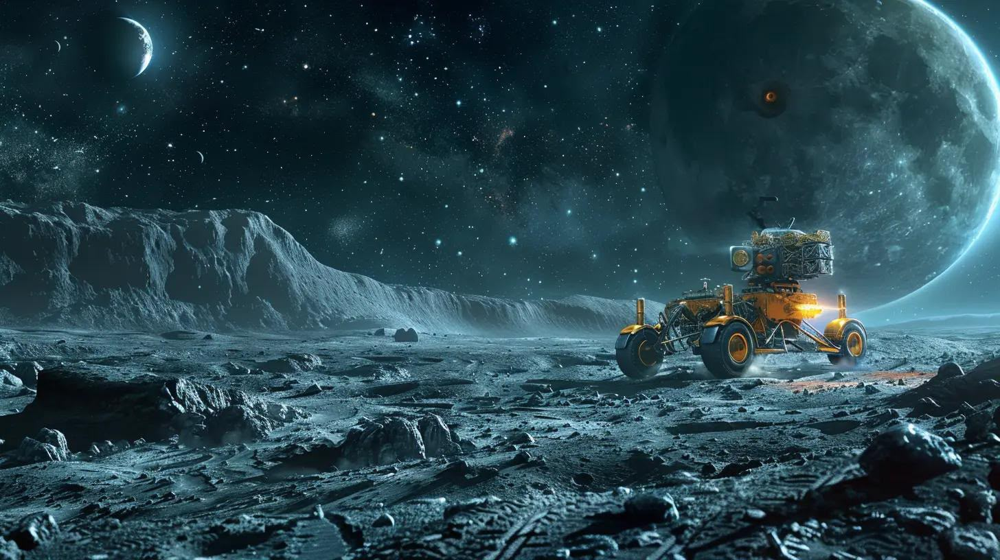

كل قطعة تركناها في الفضاء،
لها قصة تستحق أن تُروى.
اكتشف إرث المعدات العلمية التي تركتها بعثات القمر والمريخ عبر محاكاة 3D WebGL قابلة للعب بالكامل، وتجارب فيزيائية واقعية، وقصص ملهمة، وتحديات معرفية.

لعبة قيادة المركبة القمرية (بعثة أبولو 15)
تحرك على سطح القمر في موقع هادلي-أبينين، واجمع 3 إشارات علمية، وافحص العربة القمرية، واختر مسارك وقد المركبة حتى منارة البحث العلمي.
اختر مهمتك الاستكشافية
اهبط على أسطح العوالم الأخرى، وافحص المعدات التاريخية، وحل ألغاز الاتصال، وأعد بناء المعرفة العلمية المفقودة.
متحف المعدات ثلاثي الأبعاد
دوّر وكبّر وافحص المركبات والمعدات الفضائية المتروكة في عوالم أخرى. تعرّف على مواصفاتها وأدواتها العلمية وما تعلمناه منها.
شبكة المعرفة والأدلة العلمية (Archive Graph)
حرك المؤشر فوق النقاط واضغط لاستكشاف الترابط بين المعدات المتروكة والأدلة الميدانية والاكتشافات العلمية الكبرى.
مختبر فيزياء التنقل وتخطيط المهمات
اختبر تأثير سرعة المركبة والمسافة في الوقت المتاح للملاحظات الجيولوجية، وفق معادلات تخطيط رحلات أبولو الحقيقية: الزمن = المسافة ÷ السرعة.
متغيرات الرحلة الاستكشافية
المقارنة الفيزيائية والنتائج
رائد فضاء ماشياً (3 كم/س)
مركبة أبولو القمرية (LRV)
جاري حساب أثر الحركة في توسيع فرص العمل الحقلي...
قصص من آفاق الفضاء
حكايات تعليمية مشوقة تحول المهمات الكوكبية المعقدة إلى مغامرات إنسانية خالدة.
اختبر معلوماتك في علوم الفضاء
أجب عن أسئلة علمية موثقة بمصادر ناسا واجمع نقاط المعرفة XP وارتقِ في رتب رواد الفضاء.
مستكشف وثيقة المشروع الكاملة (Game Bible)
تصفح أوراق التصميم الـ 43: كتالوج الألغاز الـ 35، والحقائق العلمية الـ 24، وأسئلة المحكمين، والمعمارية التقنية.
لوحة الشرف وسجل الزوار
احتفِ بأفضل المستكشفين واقرأ ملاحظات الطلاب والمعلمين ومحكّمي مسابقة ناسا سبيس آبس.